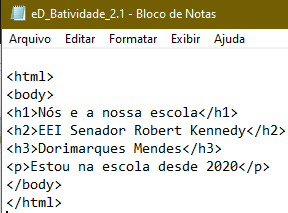
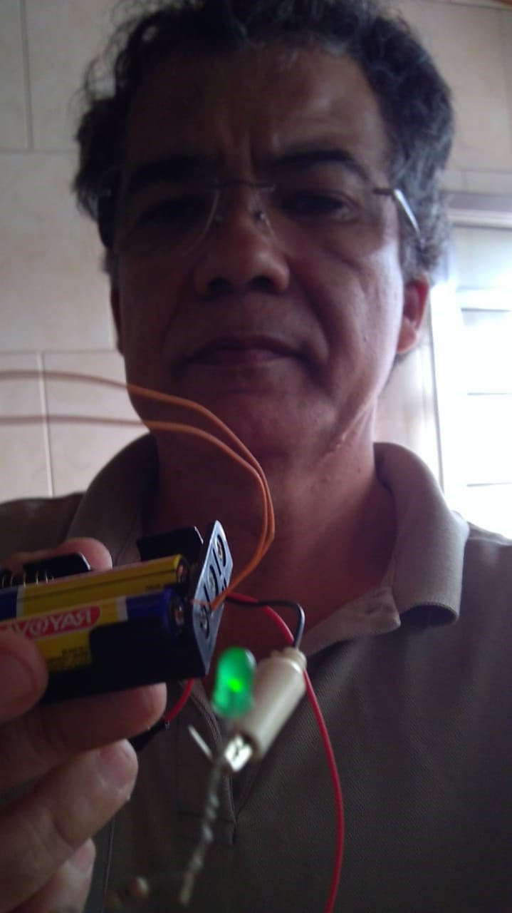

LOGO DA NOSSA ESCOLA

Link da escola Kennedy
Ver no FACEBBOKAULA 01-20/03/2021 - 09h30 as 12h00
Esta aula foi ministrada pelos professores Prof. Dr. Mário Minam e Profa. Dra. Aline de Oliveira Neves Panazio. Foi para explicar como será o curso de Robótica Pedagógica, que ocorrerá neste primeiro momento, com aulas onlines.
Foi apresentado qual o objetivo do curso, sua importância para o desenvolvimento do interesse do aluno por novas tecnologias, e as principais habilidades da união Européia para a Índustria 4.0.
Fizemos uma atividade, onde mostrei as habilidades que estou preparado e as que ainda preciso melhorar, ou seja que não domino.
A minha habilidade que considero dominada, é: Solução de problemas e a que ainda não domino, é: Emprededorismo.
AULA 02-27/03/2021 - 09h30 as 12h00
Esta aula foi ministrada pelos profesores Prof. Dr. Mário Minami e Prof. Dr. Celso Setsuo Kurashima.
Foi passado alguns comandos e uma atividade de como construir um documento HTML, utilizando o Bloco de notas do Windows, conforme abaixo:
Abrir bloco de notas do Windows;
Na Atividade 2.2, fizemos uma atividade prática utilizando os seguintes materiais:
01 led de qualquer cor;
01 resistor de 100 ohms;
01 buzzer;
02 pilhas AA;
02 fios;
conforme imagem abaixo:
AULA 03-08/05/2021 - 09h30 as 12h00
nesta aula o professor André
foi trabalhado habilidades da BNCC e em especial a habilidade EF35LP25: LP25d-Criar narrativas ficcionais, com certa autonomia, utilizando detalhes descritivos, sequências de eventos e imagens apropriadas para sustentar o sentido do texto, e marcadores de tempo, espaço e de fala de personagens.
O professor Mario Minami, explicou a construção do Favo de colméia como ferramnta gráfica que possibilita ver de maneira clara o processo
-escolhemos uma Habilidade da BNCC,para colocarmos em nosso Diario de Bordo e que deve ser postada na forma de Colméia.Foi trabalhado pelo professor André Kazuo Takahata, o tema sobre Inteligência Artificial e foi explicadocomo trabalhamos com o criador de BOTS, Pandorabots.
Clique para PandorabootsO professor Andre nos mostrou o exemplo de uma narrativa, simulando a historia dos Três Porquinhos
Elaboramos uma outra narrativa , baseada na dos Treês Porquinhos
conforme o arquivo abaixo:
VEJA MEU BOOT